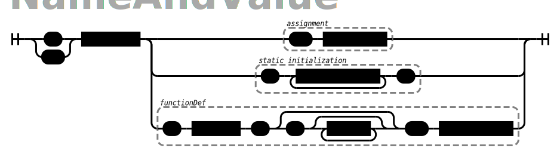

2. CodeDog language reference¶
2.1. CodeDog Files¶
A CodeDog program is defined in a text file. By convention filenames have a .dog extension.
2.1.1. Comments¶
CodeDog supports line and block comments. Line comments are from // to the end of the line. Block comments are between /* and */
2.1.2. #include files¶
CodeDog files may directly include the contents of other files by with an include directive.
#include colorDefinitions.dog
#include includeFiles/extraData.dog
CodeDog tries to find included files in three places, in order, before giving up. They are:
- The current working directory
- The directory where codeDog is located
- The directory where the current source file is
2.2. The Three Sections of a CodeDog Program¶
Starting from the top of the dog file to the bottom there are three sections to every CodeDog program. They are called the buildSpecs section, the tags section and the class definition section.
2.2.1. Define your builds with buildspecs¶
The first section, called “BuildSpecs” is where the different builds requested for this program are defined.
Example:
LinuxBuild: Platform='Linux' CPU='amd64' Lang='CPP' optimize='speed';
SwingBuild: Platform='Java' CPU='JavaVM' Lang='Java' optimize='speed';
AndroidBuild: Platform='Android' CPU='JavaVM' Lang='Java' optimize='power';
iPhoneBuild: Platform='IOS' CPU='amd64' Lang='Swift' optimize='speed';
MacBuild: Platform='MacOS' Lang='Swift' optimize='speed';
This code specifies to build five variations of the program. The identifier at the beginning of each line is the name of a folder to place the build in. Next, after the colon, is a list of tags which define the build. Tags will be discussed in the next section, But they can give information to CodeDog such as which platform to build for.
Note
Unless there are specific libraries and classes that can use tags such as ‘optimize’ or ‘CPU’, these tags do not do anything. At the current time many libraries and classes can be selected by Platform and Lang tags. When such classes are written tags that specify the CPU or the size of the L2 cache, for example, could cause those optimized classes to be selected in the right situation.
Note
- Leaving out the buildSpecs causes CodeDog to build for the current platform.
- If you wish to separate the specifications of which builds to do from your code, place the buildSpecs in a separate file and #include it near the top of the dog file.
2.2.2. Define your application information with tags¶
The tags section of a program consists of a list of tag definitions.
Use this section give additional information to CodeDog about build settings, GUI preferences and so on.
Here is a typical tag section:
Title = "Minimal GUI Demo"
FileName = "minimalGUI"
Version = "1.0"
CopyrightMesg = "Public Domain"
Authors = "Bruce Long"
Description = "This is an example of a very minimal GUI"
ProgramOrLibrary = "program"
LicenseText = `Public Domain`
featuresNeeded = [GUI_ToolKit, Dashboard, Unicode]
runCode=``
While you can put any tags you want to in this section, only certain ones are used by CodeDog. For example, the featuresNeeded tag, along with Platform and Lang help CodeDog choose which libraries to link. Patterns and classes may refer to these to get arguments or preferences. If you make your own patterns you may require different tags to be present.
Note that the tags in the buildSpecs override the tags in the tags section during each build. For example, if the tags section contained the tag optimize = speed, but builds for phone devices contained optimize = power, the power value would override the speed value in those builds.
- There are several different types for tags.
- A string:
FileName = "minimalGUI"orFileName = 'minimalGUI' - A multi-line string: Use backtics to delimit a string when needed. The LicenseText and runCode tags often need to be on multiple lines.
- A keyword:
ProgramOrLibrary = program. Keywords can contain alphanumeric characters or any of these: - * _ . / - A List:
featuresNeeded = [GUI_ToolKit, Dashboard, Unicode]. Note that the items in this list are Keywords but could be any of the other tag types, including nested lists or maps. - A Map:
defaultStyle = { bgColor=red font="times new roman" }. Note that a map is really just a list of tag definitions So they can contain other lists and maps as well.
- A string:
2.2.3. Write your classes and apply any patterns¶
The third section of a CodeDog program is where classes for the program are defined. CodeDog’s concept of classes is somewhat different than the typical object oriented class. The concepts, syntax and usage are described in the next chapter.
2.3. Classes¶
A recurring theme regarding CodeDog’s class definitions, and data types in general, is that there is a wealth of information about what your program is supposed to do or not do captured in the definition of a type. Languages that try to infer too much about the type of your data miss out on the opportunity to help in the creation of a program. Looking at a class definition you almost have enough information to figure out how to read or write that class to a file, or to a database. If it is known that a particular class is supposed to be filled in by a user, there is almost enough information to let a programmer create a GUI for the task. Almost. Classes in CodeDog are slightly different in several ways that allow them to be used for such tasks.
A common way of thinking about classes in programming languages is that they are a way to package data into a single ‘chunk’ together with the ‘methods’ or action that can be performed on that data. This perspective is not wrong, but there is a more useful way of looking at classes that explains several of the unusual aspects of CodeDog classes.
Think of classes as a ‘map’ of a chunk of information. If we are given a chunk of information, what data items are inside it and where are they located? In addition, what actions can be performed on that data?
2.3.1. Kinds of classes¶
The term “class” in CodeDog is not actually a keyword in the language. Instead, there are three ways to define a map of information. The keywords are ‘model’, ‘struct’, and ‘string’; all three are called classes.

2.3.1.1. Class Tags¶
The first thing to notice about classes from the above syntax diagram is that they can have tags associated with them. Patterns and other aspects of CodeDog can use these tags.
A major built-in use is to define inherited classes or implemented classes. Because CodeDog compiles to use native libraries there is also a tag to assert that a class is a wrapper around another class, probably one in a library.
struct shapeWidget: inherits = <widget> {...}
struct MasterMouseListener: implements=MouseListener {...}
MutexMngr: wraps = Unique_Lock_Mutex {...}
Another exapmle of how class tags are used is how they can define the performance of a function so that CodeDog can best choose among options In the following example uses a variety of tags.
Note that all the tags given as examples here are documented elsewhere and it isn’t expected that the examples will be fully understood at this point.
struct CPP_Deque<nodeType>: implements = List wraps = deque specs = {insert = linear append = constant prepend = constant}{...}
- Note::
- By convention, we name classes with CamelCase starting with a capital letter and non-classes with lower-case camelCase.
The structure of a class consists of a list of field definitions. A structure defined with curly braces ( ‘{‘ and ‘} ) defines a sequence of fields. Defining a structure with square brackets ( ‘[‘ and ‘]’ ) denotes a ‘union’. Only one of the fields is valid at a time.
2.3.1.2. Models¶
For all but the simplest situation, classes have some fields that are considered an integral part of the class and others that are merely implementation details. Typically, languages let the programmer distinguish the ‘essential’ fields from the implemetation details fields by marking them public or private. The idea is that public fields are those an outside programmer may use and private fields are those used internally by the class. This is not the best way of making the distinction. There may be some public fields that are needed by the programmer but which are not a part of the ‘essence’ of the class. For example, a function to dump the contents of a class may be public but it is not part of the essence of the class. This becomes important in CodeDog when the language needs to know which fields are the important ones. In addition, all the markings of public and private can really become complicated and clutter a program. To handle various cases languages add “friend” classes which are partly public and partly private. And the complexity grows.
Models vs structs: The first difference is that instead of public and private fields, CodeDog considers fields defined as a model to be the essential fields for the class and fields defined as a struct are considered non-essential.
Entending classes: The second difference is that classes defined under the same name are extensions of the same class. For example, if you define a model named “personRec’ with fields ‘name’ and ‘age’, you could later define a struct named personRec with fields ‘calculateAge()’ and ‘dumpStatus()’. The resulting class would have all the fields. If later you want to make a parser for this class, CodeDog can help. But it will not try to parse the struct fields; just the model fields.
Models are abstract: A third difference is that models are considered ‘abstract’ classes. They define what fields are in a class but not where they are. Therefore, if a class is defined only as a model it cannot be instantiated.
To be able to instantiate a model make a struct form of it.
model shape {
me Color: color
me mode[circle, square, rectangle, oval]: shapeType
}
// By itself, shape cannot be instantiated. We must add the following line:
struct shape{}
// We can also add more fields:
struct shape{
me bool: isPreferredShape
}
2.3.1.3. Structs¶
Classes denoted *struct*s are similar to classes of other languages and can be implemented.
2.3.1.4. Strings¶
Classes denoted *struct*s are sequences of bytes. They typically have a well defined size that does not change. Furthermore, they are typically considered to reside in memory.
Classes declared with string are maps of sequences of bytes which can vary in size. They are maps of strings. Moving data from a string class to a struct class requires a parser. These can often be generated automatically by CodeDog. String classes are described in detail in the section Generating Parsers.
2.3.1.5. A struct named GLOBAL¶
CodeDog uses the special struct named GLOBAL to represent fields that should have a global scope. To make a variable with global scope, simply place it inside the GLOBAL struct. The following example declares a global integer named globalCount and on program start it is initialized to 1.
struct GLOBAL{
me int: globalCount <- 1
}
In languages (Java) that are unable to support global variables, a commonly used work-around is used to get the same effect as global scope.
2.4. Fields¶
2.4.1. Data types and ownership¶
When declaring variables in CodeDog, both an ownership type and data type are specified. Data Types
2.4.1.1. Ownership¶
In CodeDog, variables are assigned an ownership type. The ownership type of an object tells CodeDog where to allocate memory and when to release the memory. For strictly Python users, this may be a foreign concept. For C++ users, they translate to objects, pointers, shared pointers, etc. This is a part of CodeDog because it translates your program to languages that have very different approaches to ownership, without you needing to know the details of each language.
An analogy for considering ownership types for the uninitiated is to think of a person as a class, we’ll call her Susie. Susie has integral components, such as an arm or head, and these are represented in CodeDog ownership as type “me”. It doesn’t make sense to reference them as separate from Susie, they’re an integral part of her. Those are “me”s.
Susie’s class may reference a belonging, such as a bike, that belongs to her but isn’t an integral part of her (unless she commutes on it, in which case it may feel like an appendage!) This is represented in CodeDog ownership by “my”, because it belongs to her but it isn’t an integral part. It could be lent to someone else to make use of it but it isn’t theirs to destroy, that right remains with Susie. She is the one that releases it from memory when it reaches the end of its life.
Susie’s class may reference something that she shares with many different people, possibly at the same time. Like a bus, Susie uses the bus, but so do others. In CodeDog this ownership is “our”. None of the users of “our” items have to destroy the “our” objects. The system will destroy them when the time is right.
Finally Susie’s class may also contain a reference to someone else’s stuff, like Dad’s car. Susie can use it but it’s not hers to destroy. This is represented in CodeDog ownership as “their”. It points to a reference in memory allocated somewhere else that Susie isn’t responsible for releasing.
In CodeDog memory releasing is done for you, so you won’t be manually releasing memory. But the analogy can be useful for wrapping your head around when memory is being freed.
Common ownership types
me, our, their
me - a part of its class or function, this is the object itself as a local or global variable or an argument in a function. As soon as the object it is in is erased from memory or the program exits the scope it’s declared in, any “me” elements are released from memory. If no ownership type is specified, CodeDog will default to “me”.
our - the “our” element is a reference to a variable that other classes or functions may also have a reference to. When the program exits the scope of an “our” element, the “our” element on the stack is freed, but if other things are still referencing the same variable, the variable itself will not be freed. Only when all pointers to a location are freed will the referenced variable be freed. This is how most variables in Java work and in C++ codeDog implements and manages them as a shared pointer.
their - the “their” element is a small piece of memory that points to a location in memory on the heap that is managed by another class. In CodeDog “their” is less commonly used than “me” and “our”, it is used primarily for pointers received from an API or another class. Analogous to an unmanaged pointer in C++. Advanced ownership types
The ownership types of “my”, “we” and “itr” are intended for more advanced use cases and will be explained later.
2.4.1.2. Basic Data Types¶
The basic data types built into CodeDog, each followed by an example that declares & assigns a variable of that type. Booleans
A boolean with possible values of “true” and “false”
me bool: isOn <- true
2.4.1.3. Text¶
char
A “char”, limited to a string literal of length one.
string
A “string” of text characters of arbitrary length.
me char: firstInitial <- "M"
me string: firstName <- "Matt"
User Strings
Some strings are specifically meant to be messages presented to users. These are enclosed in single quotes. User strings undergo extra processing so do not use them unless the extra functionality is warrented.
- They can be interpolated
- In the future they will be used when internationalizing a program to provide program wide translations to other languages.
2.4.1.4. Numeric values¶
C++ style numeric data types are built in, supporting signed and unsigned integers of 32 and 64 bit, as well as a double.
me int: age <- 27
me int32:
me int64:
me uint32:
me uint64:
me double: pi <- 3.1415926535897
Ranges
- Flags
- Modes
A range of integers can be specified. Currently this defaults to int. In the future this will be adjusted to choose an optimal data type and restrict values to the specified range.
me 0..23: hour <- 17
2.4.2. Declaring Fields¶
Name and field and optionally give an initial value
2.5. Functions¶
Fields that are declared with an argument list in the name are considered functions.
me int: addOne(me int: num) <- {
return(num + 1)
}
2.6. Expressions and Operators¶
The following operators are supported in CodeDog: Basic Arithmetic:
12 + 3 // addition, evaluates to 15
11 - 4 // subtraction, evaluates to 7
2 * 6 // multiplication, evaluates to 12
4 / 2 // division, evaluates to 2
5 % 2 // modulus, evaluates to 1
Equality:
myInt == 5 // test for equality, this evaluates to true if myInt is 5
counter != 10 // test for inequality, this evaluates to true if counter is not 10
ourObj1 === ourObj2 // test for pointer equality, this evaluates to true if both point to the same object
There are also the standard <, <=, > and >= operators for comparison.
Logical Operators:
!
and
or
Bitwise Operators:
| // bitwise OR
& // bitwise AND
^ // bitwise XOR
In CodeDog, operator precedence is the same as in C++ and most C-like languages.
2.7. Actions¶
2.7.1. New variable declarations and assignment Actions¶
Declare variables inside functions the same way they are declared as fields in classes.
me int: A <- 5
Compound Assignments
Compound assignments can be made by inserting an operator in the middle of an assignment operator. For example, inserting the sum operator between the leading “<” and the closing “-” of a standard assignment operator, “<+-“.:
counter <+- 1 // shorthand for counter <- counter + 1
counter <-- 1 // shorthand for counter <- counter - 1
multiplier <*- 2 // shorthand for multiplier <- multiplier * 2
multiplier </- 2 // shorthand for multiplier <- multiplier / 2
<%-
<|-
<&-
<^-
<deep- // copy the contents even if there is a pointer
2.7.3. Conditional Actions¶
2.7.3.1. if / else¶
if(day=="Saturday"){
print("It's the weekend.")
}else if(day=="Monday"){
print("Coffee Please.")
}else{
print("Another day another dollar.")
}
Notice that after an else curly braces are not needed if the next statement is an if.
2.7.3.2. switch¶
switch(day){
case SAT:{print("It's the weekend.")}
case MON:{print("Coffee Please.")}
case default:{print("Another day another dollar.")}
}
Switch cases do not need to have a break at the end.